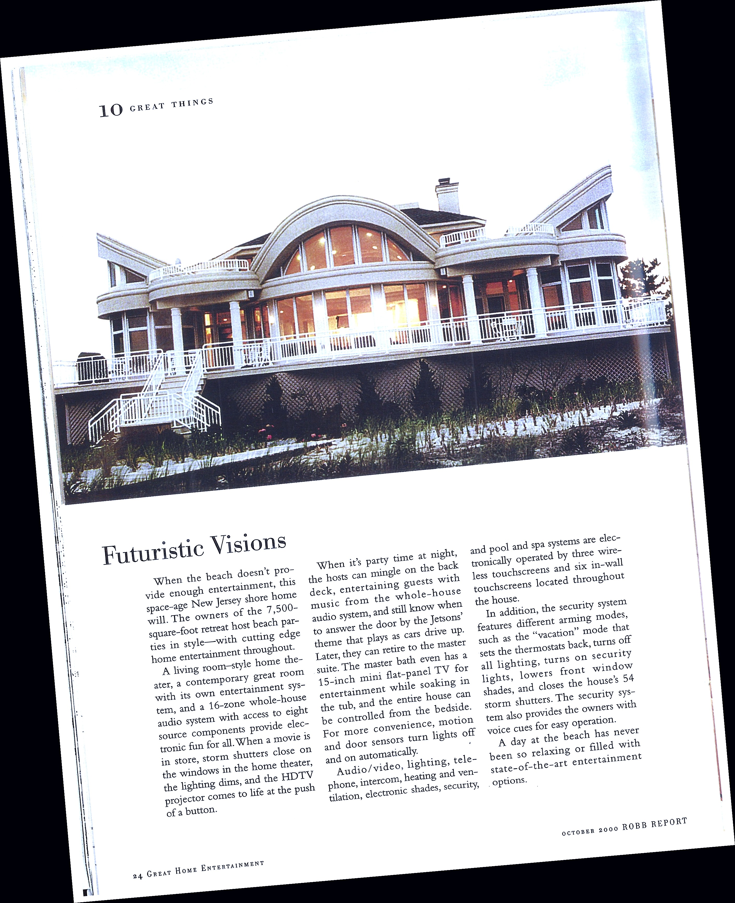

In October 2000, Robb Report's Great Home Entertainment magazine featured a 7,500-square-foot New Jersey shore home built by Shadel Construction, Roxbury Township, N.J. The home appeared in the publication's "10 Great Things" feature under the headline "Futuristic Visions" — a recognition of the home's forward-thinking integration of whole-house technology, automation, and entertainment systems.

A 7,500-Square-Foot Home Built for Entertainment
The featured home was designed around the idea that when the beach doesn't provide entertainment, the house should. The space-age New Jersey shore home was built to host beach parties in style — with a living room-style home theater, a contemporary great room with a whole-house audio system capable of serving eight source components simultaneously, and a 16-zone system delivering electronic fun to every part of the house.
When a storm rolls in, motorized shutters close on the windows in the home theater, lighting dims automatically, and the HDTV projector descends — all managed from a single button. Later, the owners could retreat to the master suite, which featured a 15-inch mini flat-panel TV embedded in the bath for entertainment while soaking in the tub, along with the ability to control the entire home from the bedside.
Whole-House Automation Before It Was Common
This home was a showcase of what was possible at the very edge of residential technology in 2000. The pool, spa, audio, video, lighting, telephone, intercom, heating, ventilation, electronic shades, security, and pool systems were all operated electronically by three wireless touchscreens and six in-wall touchscreens located throughout the house.
The security system featured multiple arming modes — including a "vacation" mode that simultaneously set thermostats back, turned off all lighting, lowered front window shades, and closed all 54 storm shutters. Voice cues enabled easy hands-free operation throughout.

What This Means for Clients Today
The technology landscape has changed dramatically since 2000, but the principles haven't: a truly integrated home requires a builder who understands not just framing and finishes, but how all the systems behind the walls need to work together from day one. Running the right conduit, providing the right chases, coordinating with AV and automation installers during framing — these decisions made during construction can't easily be undone after the drywall goes up.
Joe Shadel General Contracting brings that same philosophy to every luxury home project today. Whether you're building new construction or renovating an existing home to accommodate modern automation and entertainment systems, coordination starts early or it costs you later.
If you're planning a high-end custom build or whole-home renovation in Morris County, NJ or St. Petersburg, FL, contact us to talk through your project.